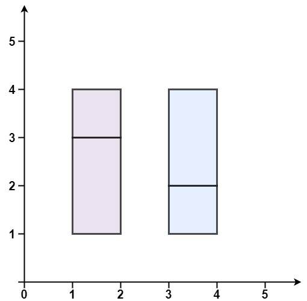

391. 完美矩形
题目与约束
给你一个数组 rectangles ，其中 rectangles[i] = [xi, yi, ai, bi] 表示一个坐标轴平行的矩形。这个矩形的左下顶点是 (xi, yi) ，右上顶点是 (ai, bi) 。
如果所有矩形一起精确覆盖了某个矩形区域，则返回 true ；否则，返回 false 。
示例 1：

输入：rectangles = [[1,1,3,3],[3,1,4,2],[3,2,4,4],[1,3,2,4],[2,3,3,4]]
输出：true
解释：5 个矩形一起可以精确地覆盖一个矩形区域。
示例 2：

输入：rectangles = [[1,1,2,3],[1,3,2,4],[3,1,4,2],[3,2,4,4]]
输出：false
解释：两个矩形之间有间隔，无法覆盖成一个矩形。
示例 3：

输入：rectangles = [[1,1,3,3],[3,1,4,2],[1,3,2,4],[2,2,4,4]]
输出：false
解释：因为中间有相交区域，虽然形成了矩形，但不是精确覆盖。
提示：
-
1 <= rectangles.length <= 2 * 104 -
rectangles[i].length == 4 -
-105 <= xi < ai <= 105 -
-105 <= yi < bi <= 105
核心不变量
所有小矩形面积之和等于整体外接矩形的面积，且除外接矩形的 4 个顶点外，其余内部角点都必须成对出现（出现偶数次）。
完整推导
思路推导
- 把「精确覆盖」拆成两个必要条件
若一堆矩形精确覆盖某个大矩形 B，则：(a) 所有小矩形面积之和等于 B 的面积；(b) 把每个小矩形的 4 个角点拿出来统计，内部接缝处每个点会被两个矩形共享而出现偶数次，最后只剩 B 的 4 个顶点各出现一次。
- 用「集合翻转」实现奇偶性
遍历每个矩形，把它的 4 个角点往一个 set 里「翻转」：不在就加入，已在就删除（等价于按出现次数取模 2）。全部处理完后，若恰好完美覆盖，set 里应当正好剩下外接矩形的 4 个顶点。
- 为什么面积 + 角点就够
面积相等排除了「总覆盖区域大于 B」的情形；角点奇偶性排除了「重叠」以及「空洞/裂缝」造成的边界不闭合。两者同时成立即为完美矩形的充要判据。
- 小例子（示例 3）
四个矩形面积之和大于外接矩形面积（中间有重叠），面积判据直接返回 false；即便面积恰好相等，重叠区也会让部分角点出现 4 次而非 2 次，翻转后仍残留在集合里，角点判据同样会失败。
Java 实现（isRectangleCover）
import java.util.HashSet;
import java.util.Set;
class Solution {
public boolean isRectangleCover(int[][] rectangles) {
int minX = Integer.MAX_VALUE, minY = Integer.MAX_VALUE;
int maxX = Integer.MIN_VALUE, maxY = Integer.MIN_VALUE;
long area = 0;
Set<String> corners = new HashSet<>();
for (int[] r : rectangles) {
int x1 = r[0], y1 = r[1], x2 = r[2], y2 = r[3];
minX = Math.min(minX, x1); minY = Math.min(minY, y1);
maxX = Math.max(maxX, x2); maxY = Math.max(maxY, y2);
area += (long) (x2 - x1) * (y2 - y1);
String[] pts = {
x1 + "," + y1, x1 + "," + y2,
x2 + "," + y1, x2 + "," + y2
};
// 出现偶数次的角点会两两抵消
for (String p : pts) {
if (!corners.add(p)) corners.remove(p);
}
}
long bboxArea = (long) (maxX - minX) * (maxY - minY);
if (area != bboxArea) return false;
if (corners.size() != 4) return false;
// set 中必须恰好是外接矩形的四个顶点
return corners.contains(minX + "," + minY)
&& corners.contains(minX + "," + maxY)
&& corners.contains(maxX + "," + minY)
&& corners.contains(maxX + "," + maxY);
}
}
C++ 实现
class Solution {
public:
bool isRectangleCover(vector<vector<int>>& rectangles) {
int minX = INT_MAX, minY = INT_MAX, maxX = INT_MIN, maxY = INT_MIN;
long long area = 0;
set<pair<int,int>> corners;
for (auto& r : rectangles) {
int x1 = r[0], y1 = r[1], x2 = r[2], y2 = r[3];
minX = min(minX, x1); minY = min(minY, y1);
maxX = max(maxX, x2); maxY = max(maxY, y2);
area += 1LL * (x2 - x1) * (y2 - y1);
pair<int,int> pts[4] = {{x1,y1},{x1,y2},{x2,y1},{x2,y2}};
for (auto& p : pts) {
if (corners.count(p)) corners.erase(p);
else corners.insert(p);
}
}
long long bboxArea = 1LL * (maxX - minX) * (maxY - minY);
if (area != bboxArea) return false;
if (corners.size() != 4) return false;
return corners.count(make_pair(minX, minY)) && corners.count(make_pair(minX, maxY))
&& corners.count(make_pair(maxX, minY)) && corners.count(make_pair(maxX, maxY));
}
};
Python 实现
class Solution:
def isRectangleCover(self, rectangles: list[list[int]]) -> bool:
min_x = min_y = float('inf')
max_x = max_y = float('-inf')
area = 0
corners = set()
for x1, y1, x2, y2 in rectangles:
min_x = min(min_x, x1); min_y = min(min_y, y1)
max_x = max(max_x, x2); max_y = max(max_y, y2)
area += (x2 - x1) * (y2 - y1)
for p in ((x1, y1), (x1, y2), (x2, y1), (x2, y2)):
if p in corners:
corners.remove(p)
else:
corners.add(p)
bbox_area = (max_x - min_x) * (max_y - min_y)
if area != bbox_area or len(corners) != 4:
return False
expect = {(min_x, min_y), (min_x, max_y), (max_x, min_y), (max_x, max_y)}
return corners == expect
复杂度
- 时间：O(n log n)，一次遍历，每个矩形的 4 个角点都要在
set中插入/删除；C++ 用std::set<pair>，每次操作 O(log n)，合计 O(n log n)。 - 空间：O(n)，最坏情况下角点集合规模与矩形数量同阶。
- 面积必须用 long：坐标差可达 2×10⁵，单个矩形面积可达 4×10^10，累加会溢出 int。
- 只判面积不够：面积相等仍可能是「重叠 + 空洞」互相抵消，必须再加角点奇偶判据。
- 只判角点也不够：个别重复覆盖也可能让角点集合恰好正确，面积与角点两者缺一不可。
- 翻转的实现细节：用「在则删、不在则加」，不要写成简单计数累加，否则最后还要额外清理。
- 扩展：扫描线。也可按 x 坐标做竖直扫描线并合并 y 区间来校验，这是 tag 中 Sweep Line 的思路，复杂度 O(n log n)，实现更繁琐。